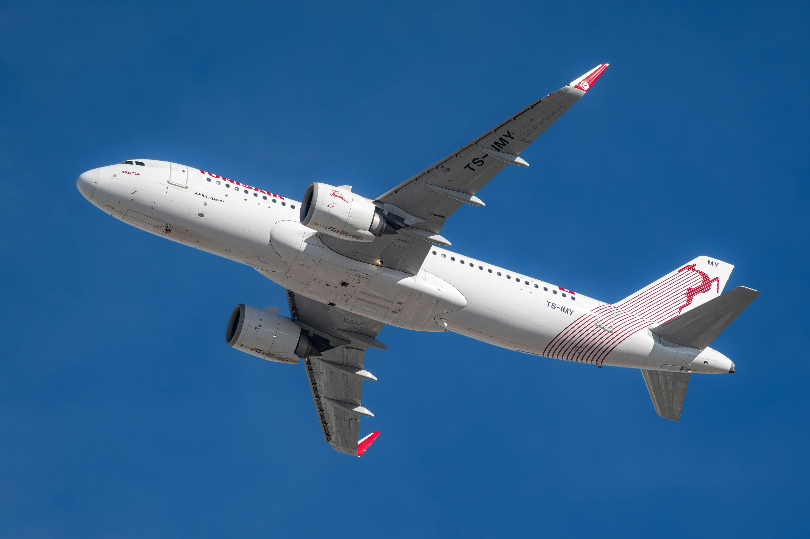
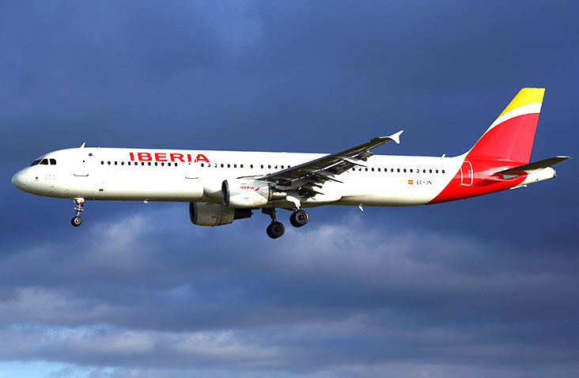
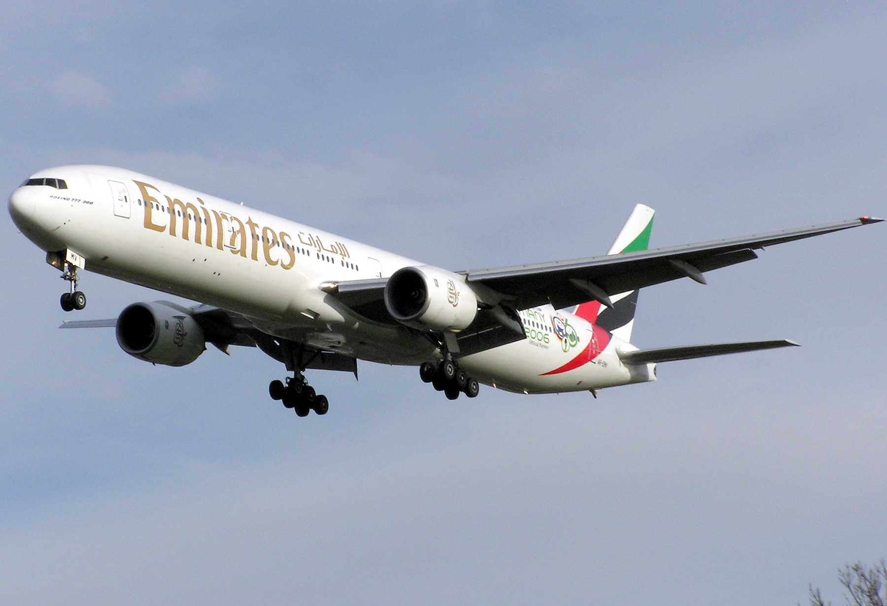
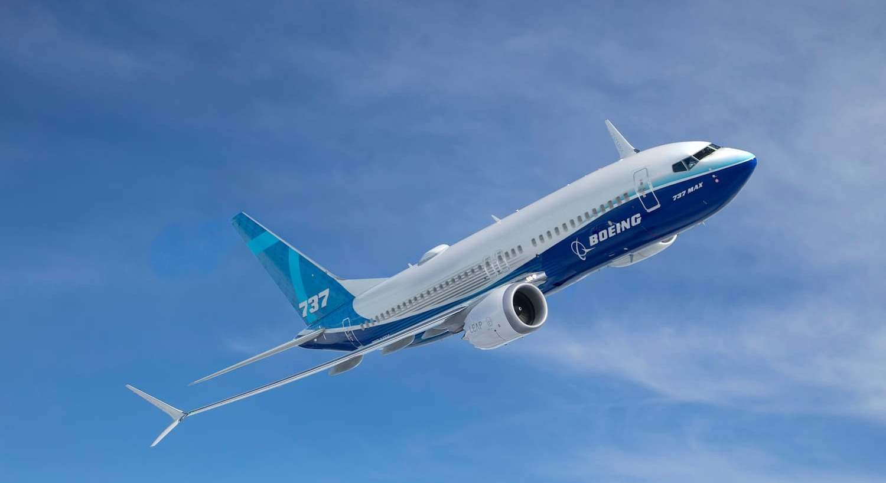
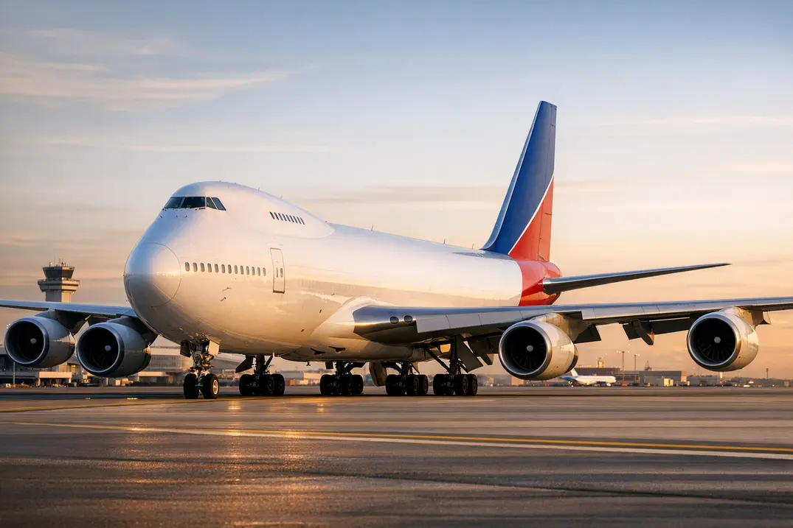
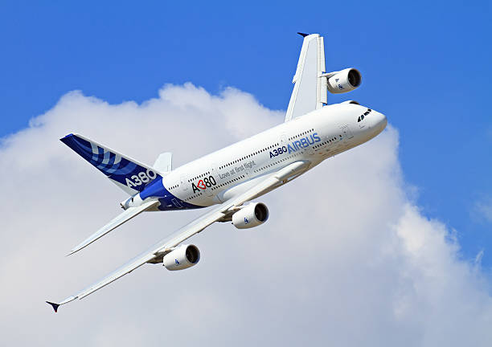
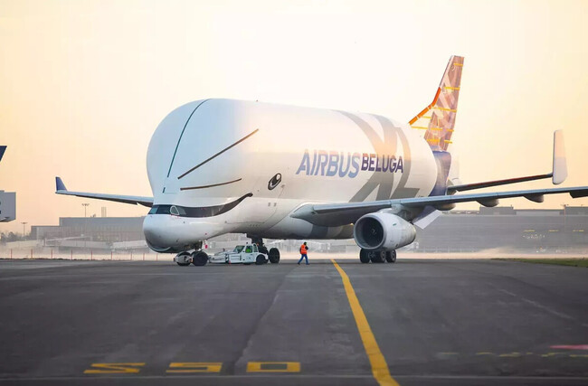

A320
El Airbus A320 es el principal competidor del 737 y uno de los aviones más modernos y vendidos del mundo. Desarrollado por Airbus, introduce innovaciones como el control fly-by-wire, ofreciendo mayor eficiencia, comodidad y seguridad en vuelos de corto y medio alcance.

A321
El Airbus A321 es la versión más grande de la familia A320, fabricado por Airbus. Está diseñado para rutas de corto y medio alcance con alta densidad de pasajeros, destacando por su eficiencia, fiabilidad y bajo consumo, lo que lo hace muy popular entre aerolíneas de todo el mundo.

B777-300
El Boeing 777-300 es una versión alargada del Boeing 777, desarrollada por Boeing. Ofrece una gran capacidad de pasajeros y un excelente alcance para vuelos intercontinentales, siendo muy utilizado en rutas de alta demanda gracias a su eficiencia y fiabilidad.

B737
El Boeing 737 es uno de los aviones de pasajeros más utilizados del mundo, diseñado para rutas cortas y medias. Fabricado por Boeing, destaca por su fiabilidad, eficiencia operativa y gran número de variantes, lo que le permite adaptarse a diferentes necesidades de las aerolíneas.

B747
El Boeing 747, conocido como “Jumbo Jet”, es uno de los aviones más icónicos de la historia de la aviación. Fue pionero en el transporte masivo de pasajeros de larga distancia gracias a su gran tamaño y capacidad, marcando un antes y un después en la aviación comercial.

A380
El Airbus A380 es el avión de pasajeros más grande del mundo, diseñado para rutas de muy alta demanda. Fabricado por Airbus, destaca por su diseño de dos pisos completos, gran capacidad y comodidad, aunque su uso se ha reducido en favor de aviones más eficientes.

B787
El Boeing 787 Dreamliner es un avión de última generación diseñado para vuelos largos con menor consumo de combustible. Fabricado por Boeing, incorpora materiales compuestos, sistemas avanzados y mayor confort para los pasajeros.

BelugaXL
El Airbus BelugaXL es un avión de carga especial desarrollado por Airbus para transportar piezas de gran tamaño entre sus fábricas. Destaca por su fuselaje muy ancho y su forma característica que recuerda a una ballena beluga, diseñado específicamente para mover secciones completas de otros aviones de forma eficiente.